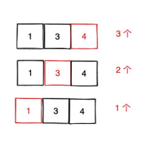

前缀和
我花了几天时间，从力扣中精选了五道相同思想的题目，来帮助大家解套，如果觉得文章对你有用，记得点赞分享，让我看到你的认可，有动力继续做下去。
- 467. 环绕字符串中唯一的子字符串(中等)
- 795. 区间子数组个数(中等)
- 904. 水果成篮(中等)
- 992. K 个不同整数的子数组（困难）
- 1109. 航班预订统计(中等)
前四道题都是滑动窗口的子类型，我们知道滑动窗口适合在题目要求连续的情况下使用， 而前缀和也是如此。二者在连续问题中，对于优化时间复杂度有着很重要的意义。 因此如果一道题你可以用暴力解决出来，而且题目恰好有连续的限制， 那么滑动窗口和前缀和等技巧就应该被想到。
除了这几道题， 还有很多题目都是类似的套路， 大家可以在学习过程中进行体会。今天我们就来一起学习一下。
前菜
我们从一个简单的问题入手，识别一下这种题的基本形式和套路，为之后的四道题打基础。当你了解了这个套路之后， 之后做这种题就可以直接套。
需要注意的是这四道题的前置知识都是 滑动窗口， 不熟悉的同学可以先看下我之前写的 滑动窗口专题（思路 + 模板）
母题 0
有 N 个的正整数放到数组 A 里，现在要求一个新的数组 B，新数组的第 i 个数 B[i]是原数组 A 第 0 到第 i 个数的和。
这道题可以使用前缀和来解决。 前缀和是一种重要的预处理，能大大降低查询的时间复杂度。我们可以简单理解为“数列的前 n 项的和”。这个概念其实很容易理解，即一个数组中，第 n 位存储的是数组前 n 个数字的和。
对 [1,2,3,4,5,6] 来说，其前缀和可以是 pre=[1,3,6,10,15,21]。我们可以使用公式 pre[𝑖]=pre[𝑖−1]+nums[𝑖]得到每一位前缀和的值，从而通过前缀和进行相应的计算和解题。其实前缀和的概念很简单，但困难的是如何在题目中使用前缀和以及如何使用前缀和的关系来进行解题。
题目推荐： 1480. 一维数组的动态和
母题 1
如果让你求一个数组的连续子数组总个数，你会如何求？其中连续指的是数组的索引连续。 比如 [1,3,4]，其连续子数组有：[1], [3], [4], [1,3], [3,4] , [1,3,4]，你需要返回 6。
一种思路是总的连续子数组个数等于：以索引为 0 结尾的子数组个数 + 以索引为 1 结尾的子数组个数 + ... + 以索引为 n - 1 结尾的子数组个数，这无疑是完备的。

同时利用母题 0 的前缀和思路， 边遍历边求和。
参考代码(JS)：
<pre class="calibre18">```
<span class="hljs-function"><span class="hljs-keyword">function</span> <span class="hljs-title">countSubArray</span>(<span class="hljs-params">nums</span>) </span>{
<span class="hljs-keyword">let</span> ans = <span class="hljs-params">0</span>;
<span class="hljs-keyword">let</span> pre = <span class="hljs-params">0</span>;
<span class="hljs-keyword">for</span> (_ <span class="hljs-keyword">in</span> nums) {
pre += <span class="hljs-params">1</span>;
ans += pre;
}
<span class="hljs-keyword">return</span> ans;
}
**复杂度分析**
- 时间复杂度：O(N)O(N)O(N)，其中 N 为数组长度。
- 空间复杂度：O(1)O(1)O(1)
而由于以索引为 i 结尾的子数组个数就是 i + 1，因此这道题可以直接用等差数列求和公式 `(1 + n) * n / 2`，其中 n 数组长度。
### 母题 2
我继续修改下题目， 如果让你求一个数组相邻差为 1 连续子数组的总个数呢？其实就是**索引差 1 的同时，值也差 1。**
和上面思路类似，无非就是增加差值的判断。
参考代码(JS)：